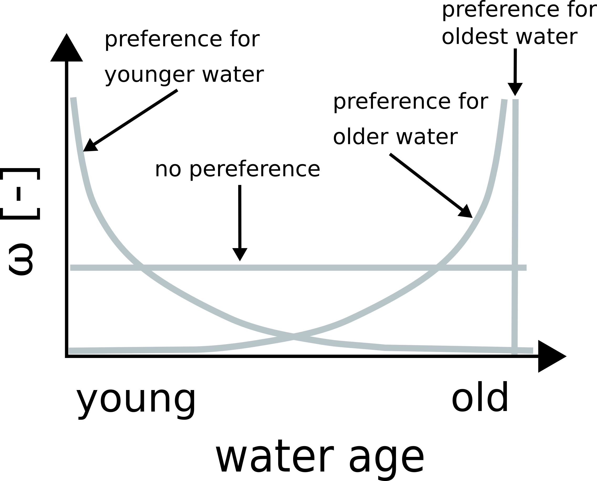

StorAge selection (SAS) functions¶
{kind=link}
Travel time distributions are calculated with fractional SAS functions (-; see van der Velde et al., 2012):
with
where \(T\) is the water age, \(t\) is the time step, is the backward travel time distribution of a specific hydrologic flux, \(Q(T,t)\) is the probability distribution of the hydrologic flux (where \(Q(T,t)\) is the cumulative probability distribution), \(S_T(T,t)\) is the cumulative age-ranked storage (mm), \(S(t)\) is the mobile storage volume (mm; i.e. storage volume below permanent wilting point is not considered) and \(P_S (T,t)\) is the cumulative probability distribution of the storage (where \(p_S (T,t)\) is the probability distribution).
Uniform¶
The uniform distribution function has no age preference.
Dirac¶
where \(T_{dirac}\) is the water age of the pulse. Please note, that a closed form of \(P_Q\) using the Dirac distribution is not available.
Kumaraswamy¶
The Kumaraswamy distribution function (Kumaraswamy, 1980) provides flexibility to represent a preference for younger water (\(\alpha_Q = 1\) and \(\beta_Q > 1\)) or preference for older water (\(\alpha_Q > 1\) and \(\beta_Q = 1\)).
Gamma¶
where \(\gamma\) is the regularized lower incomplete gamma function. Please note, that a closed form of \(P_Q\) using the Gamma distribution function is not available (see Harman, 2015).
Exponential¶
Power¶
The power distribution function provides flexibility to represent a preference for younger water (\(k < 1\)) or preference for older water (\(k > 1\)).
Time-variant SAS function parameters¶
SAS function parameters can be time-variant. For example, time-variant may be described by a linear relationship of the storage volume:
Short description of SAS parameterization¶
SAS parameters are defined in sas_params_q where _q corresponds to the flux e.g. transp.
1: Uniform SAS function
2: Dirac SAS function
3: Kumaraswamy SAS function
31: Kumaraswamy SAS function with time-variant preference for younger water
32: Kumaraswamy SAS function with time-variant preference for older water
35: Kumaraswamy SAS function with time-variant preference (e.g. preference for younger water while wetter conditions and preference for older water while drier conditions)
4: Gamma SAS function
5: Exponential SAS function
6: Power SAS function